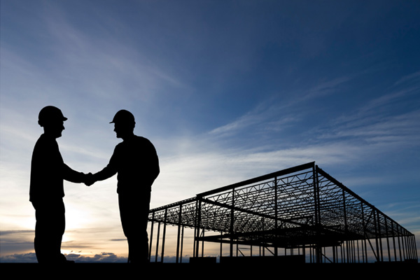

-
B.M.C - 15 ans d'expérienceBMC construit des bâtiments industriels clés en main depuis plus de 15 ans.
En tant qu'interlocuteur unique, BMC est responsable de votre projet des fondations aux finitions -
 Rénovation, design, écologie, ...BMC vous accompagne aussi dans vos travaux rénovation grâce à une solide expertise en isolation, design, écologie et bien plus
Rénovation, design, écologie, ...BMC vous accompagne aussi dans vos travaux rénovation grâce à une solide expertise en isolation, design, écologie et bien plus -

Entreprise à taille humaineBMC possède en interne les compétences nécessaires à la réalisation de vos travaux de construction, d'extension et de rénovation